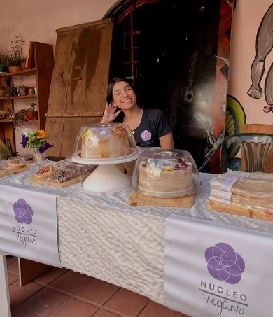

¡Bienvenidas y bienvenidos a Núcleo Vegano! Te invito a ser parte de este espacio donde la comida vegana no solo es deliciosa, sino también visualmente hermosa.
Soy Luciana, estudiante de la Licenciatura en Nutrición en la UNC, y una apasionada de la cocina. Mi objetivo es ofrecerte una experiencia única que active todos tus sentidos, desde el momento en que ves una foto de Núcleo Vegano, hasta el instante en que disfrutás cada bocado.
Lo más importante: todo lo que hago es 100% vegano, elaborado con mucho amor y respeto por los animales y el planeta.

Favoritos de la semana

Torta Matilda
Brownie de chocolate, cubierto con frosting suave, decorado con nueces, almendras y chocolate.

Chocotorta
Galletitas de cacao rellenas con queso crema vegano de tofu y dulce de leche casero.

Frutilla Clásica
Bizcochuelo húmedo de vainilla, relleno de crema y frutillas frescas.

Sandwichcake
Capas de pan de miga, jamón y queso vegano casero, con mayonesa vegetal y decoración especial.
Pedidos personalizados
¿Querés una torta o una propuesta especial para un cumpleaños, reunión o evento? También podés consultar por pedidos personalizados.
Cada creación se prepara de forma artesanal, cuidando tanto el sabor como la presentación, para que el resultado sea rico, hermoso y hecho a tu medida.
Consultar por pedido personalizadoDescubrí el catálogo completo
Encontrá opciones dulces y saladas, con propuestas pensadas para compartir, regalar o disfrutar en cualquier momento.
Ver catálogo completo